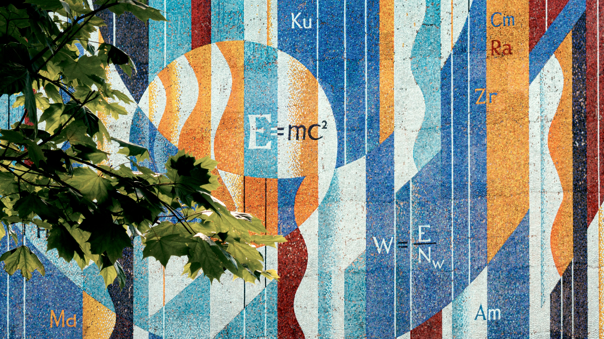

Welcome to Cooper’s Classroom. I am an undergrad physics major aiming for a Ph.D. I'll post little lessons of things I learn as the semesters go by.
I look at this as my little academic journal. My hope is to develop a website that takes these difficult topics and breaks them up into simple and intuitive lessons. This will serve as a resource for anyone else chasing their science dreams.
I'm getting my minor in digital arts, so this will also serve as a portfolio of my work. It might not appear so at first, but much like a painting, physics is art. Einstein is a perfect example. He imagined time and gravity in his mind. Using calculus as a paintbrush, he was able to paint elegant solutions to questions scientists hadn't yet thought to ask. Fifty years before any telescope could see one, the math of general relativity already described what a black hole would look like. In 2019 the Event Horizon Telescope took the picture, and it matched.
That is my goal. I want to be able to turn the science I learn, the research I work on in labs, and the theories my colleagues and I postulate into pictures, animations and simulations. To make them tangible and interactive.

In order to get to that, we have to learn a little bit of the language and culture of physics; calculus.

This is Linear Algebra. It is a pillar in a lot of science and mathematics. It is a little tricky at first, but videos like this are just a sample of the resources available to tackle anything.
If you want to read rather than watch, the Interactive Linear Algebra textbook has a chapter on vectors and their geometry that covers the same ground.